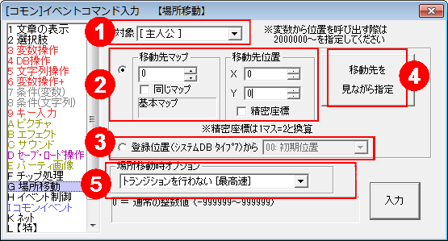
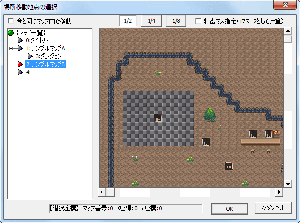

イベントコマンド 【場所移動】
プレイヤーキャラクター（主人公）やイベントの場所移動を行います。

【各部の説明】
1.対象
場所移動させる対象を選択します。変数による指定も可能です。変数の内容を-1にした場合、移動対象はこのイベント（コモンなら呼び出し元イベント）になります。
2.移動先を手動で入力する
移動先を手動で入力します。マップ番号や座標の指定には変数（例：2000000=通常変数0番）も使用可能です。
3.移動先を登録した位置から選択
移動先を、「移動先の登録機能」で登録した位置から選択します。
※旧Verでは移動先を見ながら選択することができなかったため、その代替的な措置としてこのような機能（移動先登録）が入っています。そのため、現在では使用する意味が薄くなっています。
4.移動先を見ながら選択
移動先を、マップを見ながら設定できます。このボタンをクリックすると、以下のようなウィンドウが表示されます。
【場所移動地点の選択 ウィンドウ】
移動させたいマップ/地点をマウスで選択し、「OK」を押すだけで「マップ番号」「X,Y座標」および各オプションが簡単にセットできます。
なお、ここに表示されるマップは技術的な都合により「保存」された時点のマップとなっています。編集途中のマップがすぐここに反映されたりしないので注意してください。

5.場所移動時オプション
「トランジションを行わない [最高速]」 … 実行した瞬間に移動を実行します。
「トランジションを行う [暗転なし・高速]」 … 移動時にトランジションを実行します。
「トランジションを行う [暗転有り・遅い]」 … 移動時に暗転・トランジションを挟みます。
※トランジション画像は「イベント制御」の「トランジションの指定」で指定されたものが使用されます。
（なければただの暗転やフェード切りかえ）